A/B表示对目标有明确化学参考价值，不等于目标实验成功率。C保留线索待补证，D不适用，E为负例或信息矛盾。默认22次均因任务预算停止；未测全库召回率。三个没有合格精确产物的目标，默认前五名A/B合计5/15（v2为0/15）。详细结论见同目录 report.md。
T01 乙酰苯胺：小分子酰胺
预先指定的小分子，检查宽查询和真实酰胺转化
分子量 135.17；重原子 10；环数 1
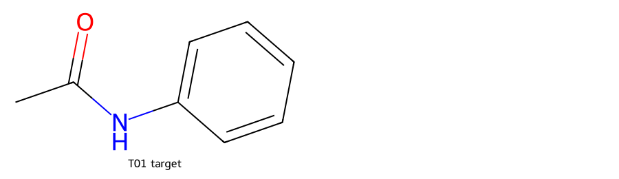
CC(=O)Nc1ccccc1
默认预算前五名
#1 · A · 酰氯乙酰化
记录 10002586 · final_score 18 · 系统标签 connection_method · 分子相似度 1.000
原文明确苯胺与乙酰氯得到乙酰苯胺，报告93%及表征，直接相关。反应物数组重复列了苯胺，不能据此推断真实双倍投料；这也使精确字符串去重漏合并。
来源：US12006301，段落 ['p-0091']；本次原文核对：已定位
实际产物与底物结构

结构文本与原文材料名称
产物：CC(=O)Nc1ccccc1
反应物：CC(=O)Cl；Nc1ccccc1；Nc1ccccc1
aniline；aniline；acetyl chloride
#2 · E · 底物产物结构冲突
记录 3422988 · final_score 12 · 系统标签 connection_method · 分子相似度 1.000
给定底物是Cbz保护4-苯胺基哌啶，乙酸酐一般应乙酰化该胺，而不是无解释地丢掉哌啶部分形成乙酰苯胺。未定位原文，当前图不足以作为目标正例。
来源：US05559131，段落 ['p-0148']；本次原文核对：未定位，保留未知
实际产物与底物结构
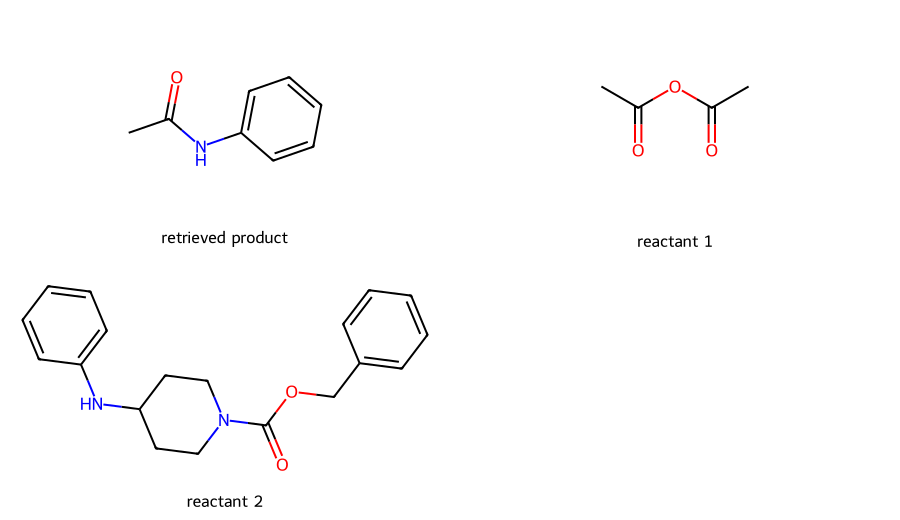
结构文本与原文材料名称
产物：CC(=O)Nc1ccccc1
反应物：CC(=O)OC(C)=O；O=C(OCc1ccccc1)N1CCC(Nc2ccccc2)CC1
1-benzyloxycarbonyl -4-anilinopiperidine；acetic anhydride
#3 · C · 酸胺缩合待补证
记录 3014968 · final_score 19 · 系统标签 connection_method · 分子相似度 1.000
乙酸与苯胺连接方向相关，活化剂也有对应线索，但未定位该原段落，保留候选而不升级为已核实实验。
来源：US04242507，段落 ['p-0067']；本次原文核对：未定位，保留未知
实际产物与底物结构

结构文本与原文材料名称
产物：CC(=O)Nc1ccccc1
反应物：CC(=O)O；CS(=O)(=O)On1nnc2ccccc21；Nc1ccccc1
Acetic acid；aniline；1-methanesulfonyloxy-1,2,3-benzotriazole
#4 · B · 酰氯乙酰化
记录 2569201 · final_score 15 · 系统标签 connection_method · 分子相似度 1.000
原文通用路线明确描述苯胺用乙酰氯生成乙酰苯胺，可作方法参考；3-羧基喹啉来自后续阶段，不应列成同一步输入。
来源：US20060106058A1，段落 ['p-0183']；本次原文核对：已定位
实际产物与底物结构
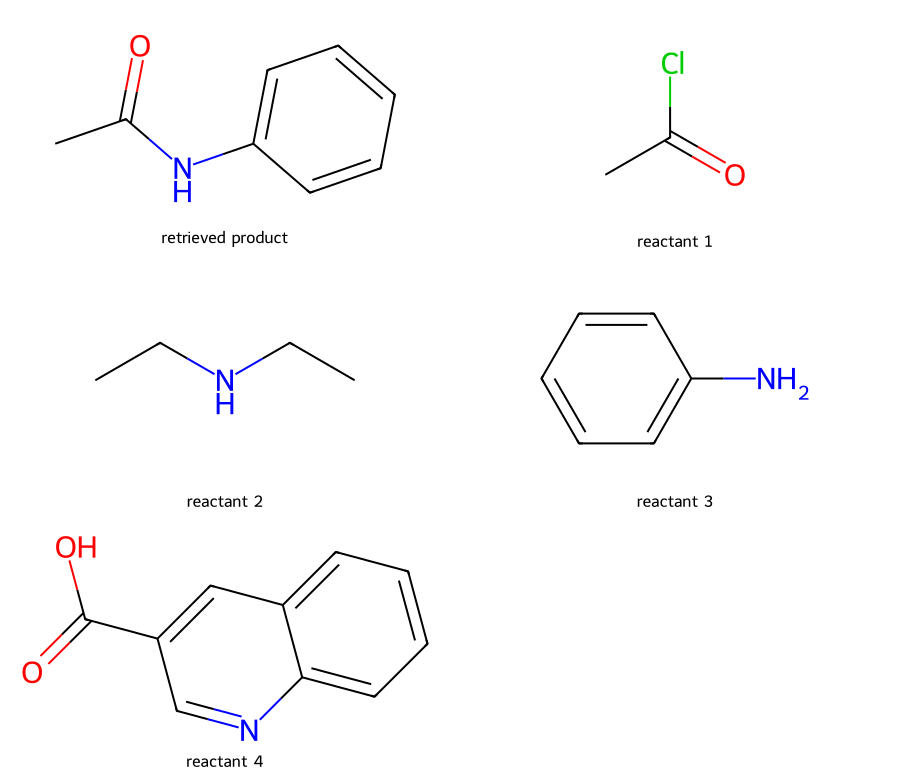
结构文本与原文材料名称
产物：CC(=O)Nc1ccccc1
反应物：CC(=O)Cl；CCNCC；Nc1ccccc1；O=C(O)c1cnc2ccccc2c1
3-carboxyquinoline；aniline；acetyl chloride；diethylamine
#5 · B · 酸酐乙酰化
记录 2388831 · final_score 14 · 系统标签 connection_method · 分子相似度 1.000
原文通用路线说明苯胺用乙酸酐N-乙酰化，支持目标连接；不是独立定量目标实验。此组聚合10条来源，不能把10当成功次数。
来源：US20050038064A1，段落 ['P-0848']；本次原文核对：已定位
实际产物与底物结构

结构文本与原文材料名称
产物：CC(=O)Nc1ccccc1
反应物：CC(=O)OC(C)=O；Nc1ccccc1
aniline；acetic anhydride
T02 β-丙氨酸乙酯：无环目标
预先指定的无环目标，盐形差异单独判断
分子量 117.15；重原子 8；环数 0

CCOC(=O)CCN
默认预算前五名
#1 · A · 叠氮还原
记录 576028 · final_score 14 · 系统标签 modification · 分子相似度 1.000
叠氮丙酸乙酯氢化生成目标伯胺且乙酯保留，原文81%与表征支持目标。
来源：EP06291157A1，段落 ['p0126']；本次原文核对：已定位
实际产物与底物结构

结构文本与原文材料名称
产物：CCOC(=O)CCN
反应物：CCOC(=O)CCN=[N+]=[N-]
3-azidopropionic acid ethyl ester
#2 · C · aza-Michael类比待验证
记录 3107591 · final_score 17 · 系统标签 connection_method · 分子相似度 0.630
乙二胺加到丙烯酸乙酯得到N取代β-氨基酯，不是目标NH2；换成氨的过加成与选择性不能由本条证明，且原文未定位。
来源：US04517122，段落 ['p-0030']；本次原文核对：未定位，保留未知
实际产物与底物结构

结构文本与原文材料名称
产物：CCOC(=O)CCNCCN
反应物：C=CC(=O)OCC；NCCN
ethyl acrylate；ethylenediamine
#3 · D · 不相关二醇氧化断裂
记录 369350 · final_score 16 · 系统标签 modification · 分子相似度 0.379
高碘酸盐裂解二醇产生醛，目标是β-氨基酯；既不形成目标胺，也不构建所需碳链，只共享酯片段。
来源：EP03077251A1，段落 ['p0080']；本次原文核对：已定位
实际产物与底物结构
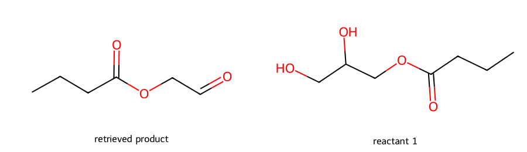
结构文本与原文材料名称
产物：CCCC(=O)OCC=O
反应物：CCCC(=O)OCC(O)CO
2,3-dihydroxypropyl butanoate
#4 · E · 来源角色与产物矛盾
记录 994926 · final_score 12 · 系统标签 connection_method · 分子相似度 0.500
原文是Fmoc氨基酸与另一胺的缩合，库中产物却是小分子二酯胺，疑把反应物当成产物且结构名称错配。不能作为目标合成先例。
来源：EP12178667B1，段落 ['p0109']；本次原文核对：已定位
实际产物与底物结构

结构文本与原文材料名称
产物：CCOC(=O)CCNCC(=O)OCC
反应物：CCOC(=O)CCCNC(=O)OCC；CN(C)c1ccccn1；NCCCCC(C(=O)O)C(=O)OCC1c2ccccc2-c2ccccc21
Fmoc-6-amino-hexanoic acid；Diethyl-azabutane-1,4-dicarboxylate；dimethylamino pyridine
#5 · C · aza-Michael类比待验证
记录 9546538 · final_score 18 · 系统标签 connection_method · 分子相似度 0.438
原文三氟乙胺对丙烯酸乙酯加成真实形成β-氨基酯，但氮上多一个三氟乙基；替换成氨需要另证选择性，当前只作方法线索。
来源：US20230416256A1，段落 ['p-0394']；本次原文核对：已定位
实际产物与底物结构
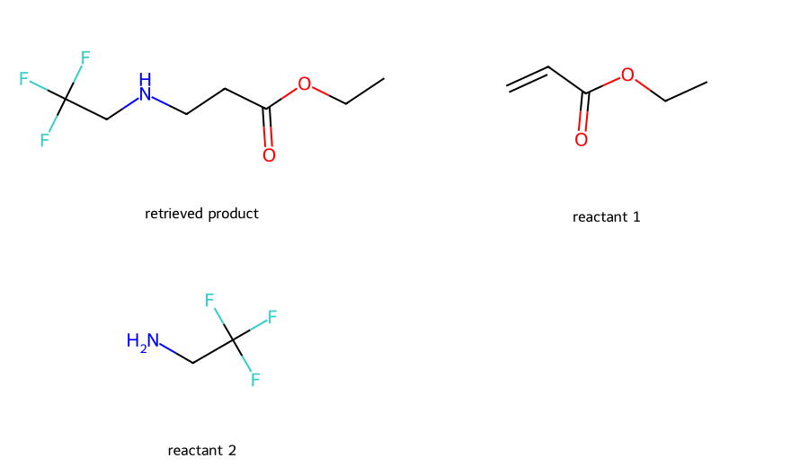
结构文本与原文材料名称
产物：CCOC(=O)CCNCC(F)(F)F
反应物：C=CC(=O)OCC；NCC(F)(F)F
2,2,2-trifluoroethanamine；ethyl acrylate
扩大预算对照前五名
#1 · A · 叠氮还原
记录 576028 · final_score 14 · 系统标签 modification · 分子相似度 1.000
叠氮丙酸乙酯氢化生成目标伯胺且乙酯保留，原文81%与表征支持目标。
来源：EP06291157A1，段落 ['p0126']；本次原文核对：已定位
实际产物与底物结构
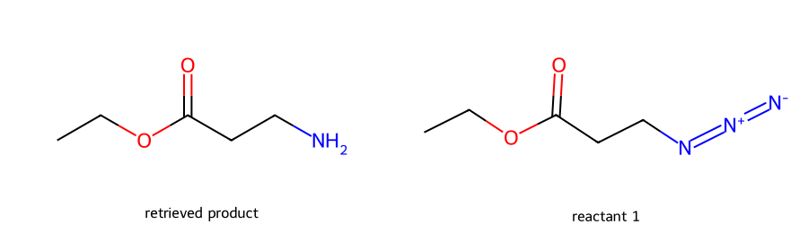
结构文本与原文材料名称
产物：CCOC(=O)CCN
反应物：CCOC(=O)CCN=[N+]=[N-]
3-azidopropionic acid ethyl ester
#2 · C · aza-Michael类比待验证
记录 3107591 · final_score 17 · 系统标签 connection_method · 分子相似度 0.630
乙二胺加到丙烯酸乙酯得到N取代β-氨基酯，不是目标NH2；换成氨的过加成与选择性不能由本条证明，且原文未定位。
来源：US04517122，段落 ['p-0030']；本次原文核对：未定位，保留未知
实际产物与底物结构
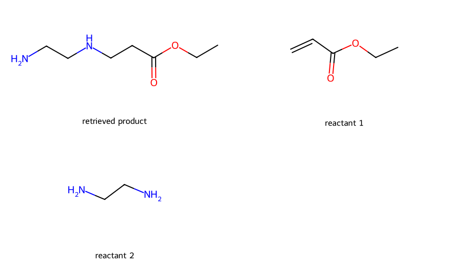
结构文本与原文材料名称
产物：CCOC(=O)CCNCCN
反应物：C=CC(=O)OCC；NCCN
ethyl acrylate；ethylenediamine
#3 · D · 不相关酯链变化
记录 2922370 · final_score 13 · 系统标签 modification · 分子相似度 0.583
直链戊酸乙酯生成不解决目标β-伯胺，原文缺失，不作为明确参考。
来源：US04003919，段落 ['p-0220']；本次原文核对：未定位，保留未知
实际产物与底物结构
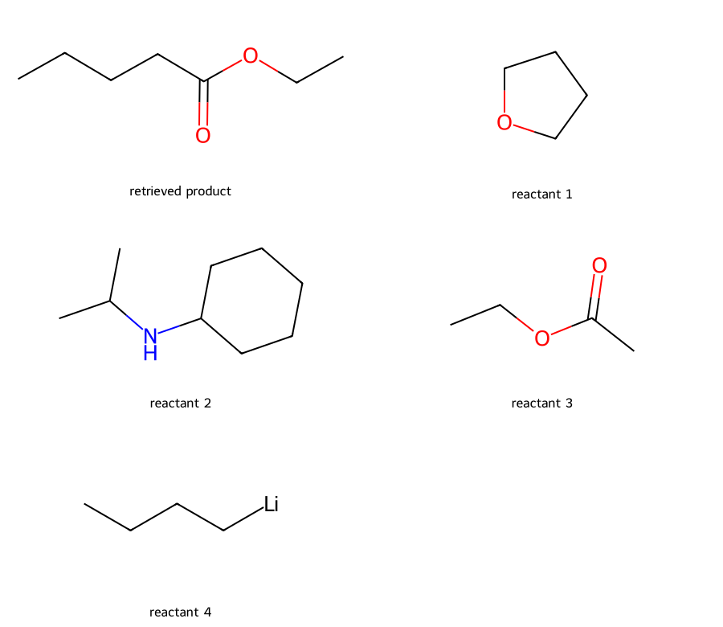
结构文本与原文材料名称
产物：CCCCC(=O)OCC
反应物：C1CCOC1；CC(C)NC1CCCCC1；CCOC(C)=O；[Li][CH2]CCC
isopropylcyclohexylamine；tetrahydrofuran；Butyl lithium；Ethyl acetate
#4 · E · 来源角色与产物矛盾
记录 994926 · final_score 12 · 系统标签 connection_method · 分子相似度 0.500
原文是Fmoc氨基酸与另一胺的缩合，库中产物却是小分子二酯胺，疑把反应物当成产物且结构名称错配。不能作为目标合成先例。
来源：EP12178667B1，段落 ['p0109']；本次原文核对：已定位
实际产物与底物结构
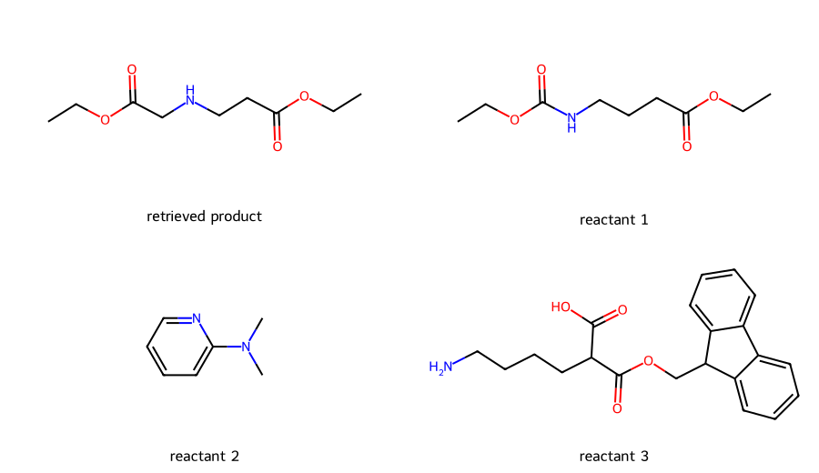
结构文本与原文材料名称
产物：CCOC(=O)CCNCC(=O)OCC
反应物：CCOC(=O)CCCNC(=O)OCC；CN(C)c1ccccn1；NCCCCC(C(=O)O)C(=O)OCC1c2ccccc2-c2ccccc21
Fmoc-6-amino-hexanoic acid；Diethyl-azabutane-1,4-dicarboxylate；dimethylamino pyridine
#5 · C · aza-Michael类比待验证
记录 9546538 · final_score 18 · 系统标签 connection_method · 分子相似度 0.438
原文三氟乙胺对丙烯酸乙酯加成真实形成β-氨基酯，但氮上多一个三氟乙基；替换成氨需要另证选择性，当前只作方法线索。
来源：US20230416256A1，段落 ['p-0394']；本次原文核对：已定位
实际产物与底物结构

结构文本与原文材料名称
产物：CCOC(=O)CCNCC(F)(F)F
反应物：C=CC(=O)OCC；NCC(F)(F)F
2,2,2-trifluoroethanamine；ethyl acrylate
T03 甲氧基苯基–吡啶：联芳基
预先指定的芳基连接目标，检查是否找到构建连接的方法
分子量 185.23；重原子 14；环数 2

COc1ccc(-c2cccnc2)cc1
默认预算前五名
#1 · A · 有机锌交叉偶联
记录 4447900 · final_score 13 · 系统标签 connection_method · 分子相似度 1.000
原文支持芳基格氏经锌盐转金属再与卤吡啶偶联得到目标；溴/氯底物是替代实验，NEP的结构解析也可疑，具体物料须按原文分开。
来源：US20100184977A1，段落 ['p-0082']；本次原文核对：已定位
实际产物与底物结构

结构文本与原文材料名称
产物：COc1ccc(-c2cccnc2)cc1
反应物：Brc1cccnc1；COc1cc[c]([Mg][Br])cc1；Clc1cccnc1
4-methoxyphenyl magnesium bromide；3-bromopyridine；3-chloropyridine
#2 · A · Suzuki偶联
记录 1360583 · final_score 20 · 系统标签 connection_method · 分子相似度 1.000
3-碘吡啶与对甲氧基苯硼酸构建目标联芳键，原文67%且有表征。
来源：EP14750620B1，段落 ['p0161']；本次原文核对：已定位
实际产物与底物结构
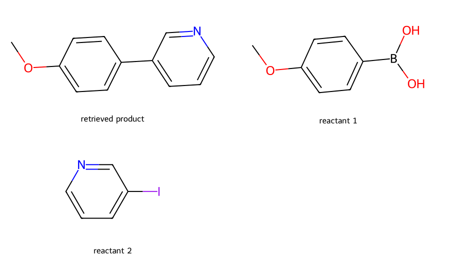
结构文本与原文材料名称
产物：COc1ccc(-c2cccnc2)cc1
反应物：COc1ccc(B(O)O)cc1；Ic1cccnc1
3-iodopyridine；4-methoxy benzeneboronic acid
#3 · A · Suzuki偶联
记录 4709472 · final_score 19 · 系统标签 connection_method · 分子相似度 1.000
3-溴吡啶与对甲氧基苯硼酸构建目标，原文58%且有表征；本组已合并4条完全相同反应式。
来源：US20110053930A1，段落 ['p-0326']；本次原文核对：已定位
实际产物与底物结构

结构文本与原文材料名称
产物：COc1ccc(-c2cccnc2)cc1
反应物：Brc1cccnc1；COc1ccc(B(O)O)cc1
3-bromopyridine；4-methoxyphenylboronic acid
#4 · A · Suzuki偶联
记录 957487 · final_score 17 · 系统标签 connection_method · 分子相似度 1.000
与4709472同样的实验和产物，原文支持目标，但数组重复列出溴吡啶，使反应式字符串不同，方法仍重复。
来源：EP09720039B1，段落 ['p0183']；本次原文核对：已定位
实际产物与底物结构
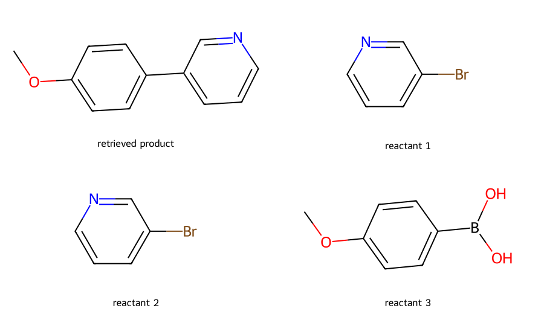
结构文本与原文材料名称
产物：COc1ccc(-c2cccnc2)cc1
反应物：Brc1cccnc1；Brc1cccnc1；COc1ccc(B(O)O)cc1
3-bromopyridine；3-bromopyridine；4-methoxyphenylboronic acid
#5 · A · Suzuki偶联
记录 9446920 · final_score 17 · 系统标签 connection_method · 分子相似度 1.000
吡啶硼酸酯与对甲氧基碘苯偶联，反转亲核/亲电两侧仍得到目标，原文80%；有用但仍属于Suzuki方法族。
来源：US20230227428A1，段落 ['p-0367']；本次原文核对：已定位
实际产物与底物结构
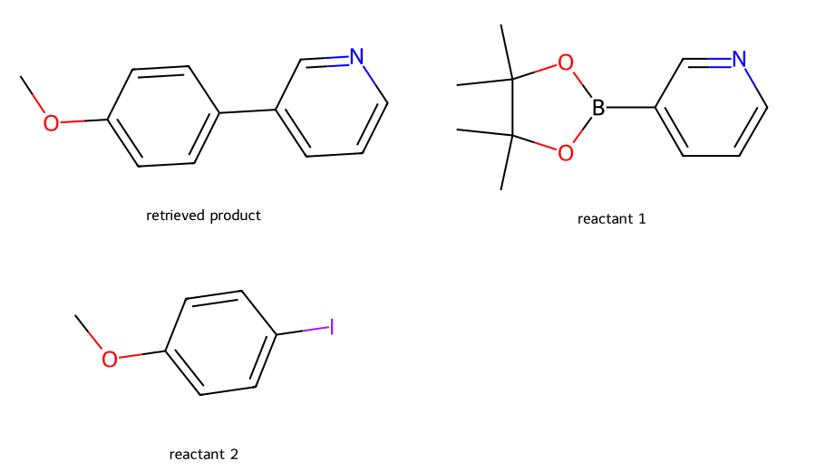
结构文本与原文材料名称
产物：COc1ccc(-c2cccnc2)cc1
反应物：CC1(C)OB(c2cccnc2)OC1(C)C；COc1ccc(I)cc1
3-(4,4,5,5-tetramethyl-1,3,2-dioxaborolan-2-yl)pyridine；1-iodo-4-methoxybenzene
T04 Boc哌啶–氟苯甲酰胺：支链接母核
预先指定的较大多官能团目标，检查酰胺连接与保护基差异
分子量 322.38；重原子 23；环数 2
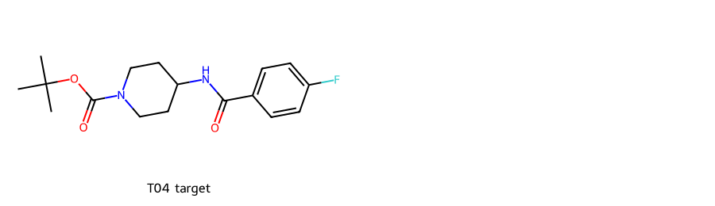
CC(C)(C)OC(=O)N1CCC(NC(=O)c2ccc(F)cc2)CC1
默认预算前五名
#1 · E · 底物产物结构冲突
记录 3892443 · final_score 13 · 系统标签 connection_method · 分子相似度 1.000
原文苄氯与胺的反应对应烷基化，库中产物却是苯甲酰胺；缺少羰基来源，不能擅自把苄氯修成酰氯。v3去重未消除该矛盾。
来源：US20080280886A1，段落 ['p-0251']；本次原文核对：已定位
实际产物与底物结构
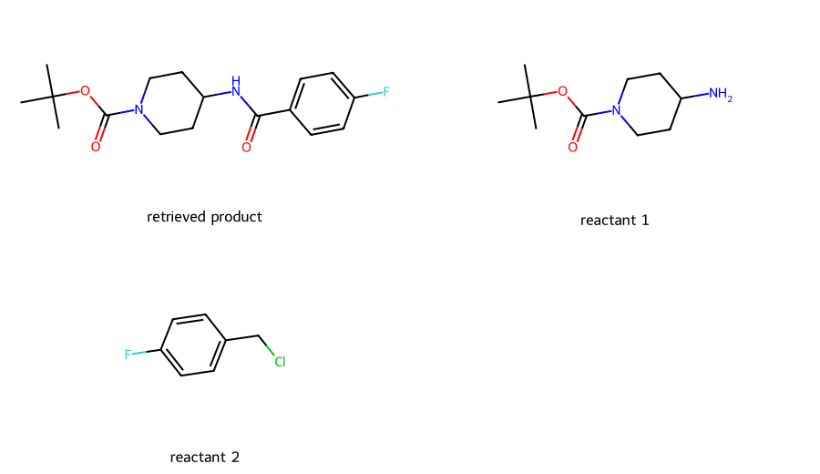
结构文本与原文材料名称
产物：CC(C)(C)OC(=O)N1CCC(NC(=O)c2ccc(F)cc2)CC1
反应物：CC(C)(C)OC(=O)N1CCC(N)CC1；Fc1ccc(CCl)cc1
1-N-tert-butoxycarbonyl-4-aminopiperidine；4-fluorobenzyl chloride
#2 · B · 芳酸与4氨基哌啶酰胺化
记录 623099 · final_score 20 · 系统标签 local_method · 分子相似度 0.729
相同N-Boc-4-氨基哌啶与芳酸经EDC/DMAP缩合，换成目标4-氟苯甲酸有明确单底物类比关系；不把来源产率视为目标结果。
来源：EP06755285B1，段落 ['p0201']；本次原文核对：已定位
实际产物与底物结构

结构文本与原文材料名称
产物：COC(=O)C(C)(C)c1ccc(C(=O)NC2CCN(C(=O)OC(C)(C)C)CC2)cc1
反应物：CC(C)(C)OC(=O)N1CCC(N)CC1；CN(C)c1ccncc1；COC(=O)C(C)(C)c1ccc(C(=O)O)cc1
4-amino-piperidine-carboxylic acid tert-butyl ester；4-(1-methoxycarbonyl-1-methyl-ethyl)-benzoic acid；N,N-dimethyl-4-aminopyridine
#3 · D · 不相关芳基乙烯化
记录 4748775 · final_score 17 · 系统标签 modification · 分子相似度 0.516
该先例在已经存在的苯甲酰胺上用乙烯基硼酸酯替换芳氯，目标无需乙烯基，也未在本步构建酰胺。
来源：US20110112096A1，段落 ['p-0260']；本次原文核对：已定位
实际产物与底物结构
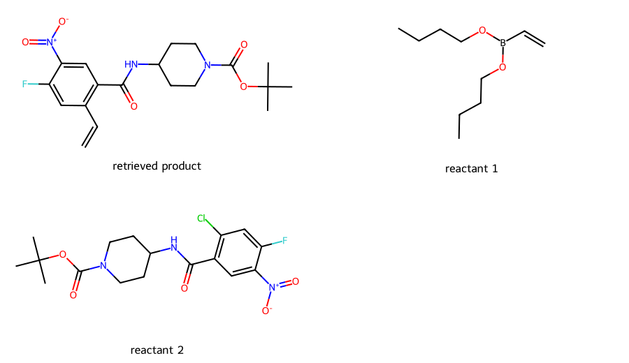
结构文本与原文材料名称
产物：C=Cc1cc(F)c([N+](=O)[O-])cc1C(=O)NC1CCN(C(=O)OC(C)(C)C)CC1
反应物：C=CB(OCCCC)OCCCC；CC(C)(C)OC(=O)N1CCC(NC(=O)c2cc([N+](=O)[O-])c(F)cc2Cl)CC1
tert-butyl 4-(2-chloro-4-fluoro-5-nitrobenzamido)piperidine-1-carboxylate；vinylboronic acid dibutyl ester
#4 · B · 芳酸与4氨基哌啶酰胺化
记录 632410 · final_score 20 · 系统标签 local_method · 分子相似度 0.635
原文先将3-甲氧基苯甲酸与同一胺偶联，再脱Boc；目标只参考前一步并换酸端，不能照搬后续脱保护。
来源：EP07829299A1，段落 ['p0192']；本次原文核对：已定位
实际产物与底物结构

结构文本与原文材料名称
产物：COc1cccc(C(=O)NC2CCN(C(=O)OC(C)(C)C)CC2)c1
反应物：CC(C)(C)OC(=O)N1CCC(N)CC1；COc1cccc(C(=O)O)c1
tert-butyl 4-aminopiperidine-1-carboxylate；3-methoxybenzoic acid
#5 · B · 芳酸与4氨基哌啶酰胺化
记录 1968888 · final_score 17 · 系统标签 local_method · 分子相似度 0.630
相同胺与另一芳酸生成同类酰胺，原文明确采用所引偶联方法；替换酸端有清楚对应，执行前仍须展开被引步骤。
来源：EP22907924A1，段落 ['p0631']；本次原文核对：已定位
实际产物与底物结构
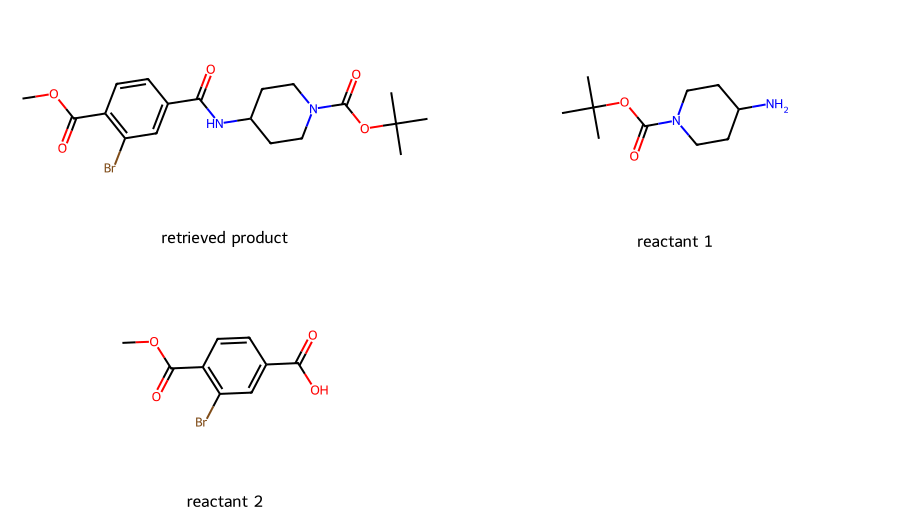
结构文本与原文材料名称
产物：COC(=O)c1ccc(C(=O)NC2CCN(C(=O)OC(C)(C)C)CC2)cc1Br
反应物：CC(C)(C)OC(=O)N1CCC(N)CC1；COC(=O)c1ccc(C(=O)O)cc1Br
3-bromo-4-(methoxycarbonyl)benzoic acid；tert-butyl 4-aminopiperidine-1-carboxylate
扩大预算对照前五名
#1 · E · 底物产物结构冲突
记录 3892443 · final_score 13 · 系统标签 connection_method · 分子相似度 1.000
原文苄氯与胺的反应对应烷基化，库中产物却是苯甲酰胺；缺少羰基来源，不能擅自把苄氯修成酰氯。v3去重未消除该矛盾。
来源：US20080280886A1，段落 ['p-0251']；本次原文核对：已定位
实际产物与底物结构

结构文本与原文材料名称
产物：CC(C)(C)OC(=O)N1CCC(NC(=O)c2ccc(F)cc2)CC1
反应物：CC(C)(C)OC(=O)N1CCC(N)CC1；Fc1ccc(CCl)cc1
1-N-tert-butoxycarbonyl-4-aminopiperidine；4-fluorobenzyl chloride
#2 · D · 不相关芳基乙烯化
记录 4748775 · final_score 17 · 系统标签 modification · 分子相似度 0.516
该先例在已经存在的苯甲酰胺上用乙烯基硼酸酯替换芳氯，目标无需乙烯基，也未在本步构建酰胺。
来源：US20110112096A1，段落 ['p-0260']；本次原文核对：已定位
实际产物与底物结构

结构文本与原文材料名称
产物：C=Cc1cc(F)c([N+](=O)[O-])cc1C(=O)NC1CCN(C(=O)OC(C)(C)C)CC1
反应物：C=CB(OCCCC)OCCCC；CC(C)(C)OC(=O)N1CCC(NC(=O)c2cc([N+](=O)[O-])c(F)cc2Cl)CC1
tert-butyl 4-(2-chloro-4-fluoro-5-nitrobenzamido)piperidine-1-carboxylate；vinylboronic acid dibutyl ester
#3 · D · 不相关噻唑成环
记录 6730054 · final_score 16 · 系统标签 local_method · 分子相似度 0.275
来源形成噻唑而非目标酰胺，仅共有保护哌啶与羰基片段。
来源：US20160237075A1，段落 ['p-0422']；本次原文核对：已定位
实际产物与底物结构
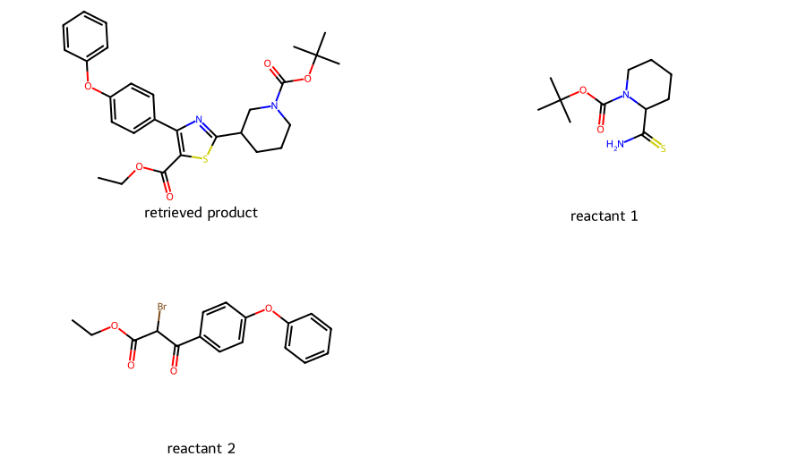
结构文本与原文材料名称
产物：CCOC(=O)c1sc(C2CCCN(C(=O)OC(C)(C)C)C2)nc1-c1ccc(Oc2ccccc2)cc1
反应物：CC(C)(C)OC(=O)N1CCCCC1C(N)=S；CCOC(=O)C(Br)C(=O)c1ccc(Oc2ccccc2)cc1
tert-butyl 2-carbamothioylpiperidine-1-carboxylate；ethyl 2-bromo-3-oxo-3-(4-phenoxyphenyl)propanoate 4
#4 · B · 芳酸与4氨基哌啶酰胺化
记录 623099 · final_score 20 · 系统标签 local_method · 分子相似度 0.729
相同N-Boc-4-氨基哌啶与芳酸经EDC/DMAP缩合，换成目标4-氟苯甲酸有明确单底物类比关系；不把来源产率视为目标结果。
来源：EP06755285B1，段落 ['p0201']；本次原文核对：已定位
实际产物与底物结构

结构文本与原文材料名称
产物：COC(=O)C(C)(C)c1ccc(C(=O)NC2CCN(C(=O)OC(C)(C)C)CC2)cc1
反应物：CC(C)(C)OC(=O)N1CCC(N)CC1；CN(C)c1ccncc1；COC(=O)C(C)(C)c1ccc(C(=O)O)cc1
4-amino-piperidine-carboxylic acid tert-butyl ester；4-(1-methoxycarbonyl-1-methyl-ethyl)-benzoic acid；N,N-dimethyl-4-aminopyridine
#5 · B · 芳酸与4氨基哌啶酰胺化
记录 632410 · final_score 20 · 系统标签 local_method · 分子相似度 0.635
原文先将3-甲氧基苯甲酸与同一胺偶联，再脱Boc；目标只参考前一步并换酸端，不能照搬后续脱保护。
来源：EP07829299A1，段落 ['p0192']；本次原文核对：已定位
实际产物与底物结构

结构文本与原文材料名称
产物：COc1cccc(C(=O)NC2CCN(C(=O)OC(C)(C)C)CC2)c1
反应物：CC(C)(C)OC(=O)N1CCC(N)CC1；COc1cccc(C(=O)O)c1
tert-butyl 4-aminopiperidine-1-carboxylate；3-methoxybenzoic acid
T05 Boc哌啶β-酮酯：库内阳性
前次只读核验中reaction_v2的id=2产物；作为自命中阳性，不代表泛化
分子量 299.37；重原子 21；环数 1
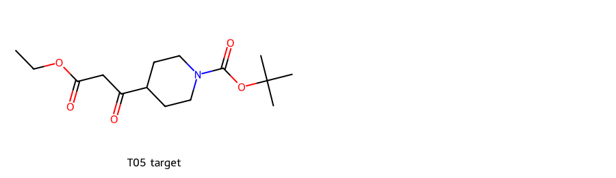
CCOC(=O)CC(=O)C1CCN(C(=O)OC(C)(C)C)CC1
默认预算前五名
#1 · A · Meldrum酸中间体醇解
记录 7320132 · final_score 13 · 系统标签 connection_method · 分子相似度 1.000
定位到两个连续原文段落：酸与Meldrum酸先酰化，再用乙醇回流得到目标85%。是有用的直接路线，但库中把起始物与中间体并列为同一步反应物，需要分步理解。
来源：US09745288，段落 ['p-0358', 'p-0359']；本次原文核对：已定位
实际产物与底物结构
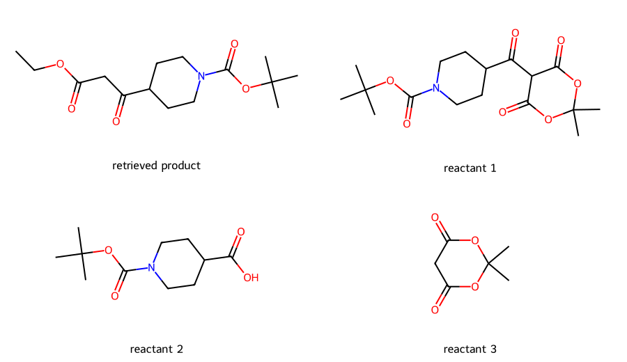
结构文本与原文材料名称
产物：CCOC(=O)CC(=O)C1CCN(C(=O)OC(C)(C)C)CC1
反应物：CC(C)(C)OC(=O)N1CCC(C(=O)C2C(=O)OC(C)(C)OC2=O)CC1；CC(C)(C)OC(=O)N1CCC(C(=O)O)CC1；CC1(C)OC(=O)CC(=O)O1
tert-butyl-4-(2,2-dimethyl-4,6-dioxo-1,3-dioxane-5-carbonyl)piperidine-1-carboxylate；1-(tert-butoxycarbonyl)piperidine-4-carboxylic acid；2,2-dimethyl-1,3-dioxane-4,6-dione
#2 · C · 交叉引用待展开
记录 589604 · final_score 13 · 系统标签 connection_method · 分子相似度 1.000
原文按吡啶β-酮酯实例的方法制目标，参照实例产物不是真实共反应物。需要展开引用，不能直接照当前底物列表回放。
来源：EP07112458A1，段落 ['p0404']；本次原文核对：已定位
实际产物与底物结构
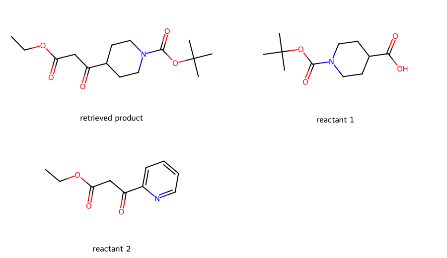
结构文本与原文材料名称
产物：CCOC(=O)CC(=O)C1CCN(C(=O)OC(C)(C)C)CC1
反应物：CC(C)(C)OC(=O)N1CCC(C(=O)O)CC1；CCOC(=O)CC(=O)c1ccccn1
N-Boc-piperidine-4-carboxylic acid；ethyl 3-oxo-3-pyridin-2-yl-propionate
#3 · D · 不相关噻唑成环
记录 6730054 · final_score 16 · 系统标签 local_method · 分子相似度 0.324
硫代酰胺与α-溴β-酮酯形成噻唑，目标是哌啶4位的开链β-酮酯；共同Boc/酯片段不使它成为目标方法。
来源：US20160237075A1，段落 ['p-0422']；本次原文核对：已定位
实际产物与底物结构

结构文本与原文材料名称
产物：CCOC(=O)c1sc(C2CCCN(C(=O)OC(C)(C)C)C2)nc1-c1ccc(Oc2ccccc2)cc1
反应物：CC(C)(C)OC(=O)N1CCCCC1C(N)=S；CCOC(=O)C(Br)C(=O)c1ccc(Oc2ccccc2)cc1
tert-butyl 2-carbamothioylpiperidine-1-carboxylate；ethyl 2-bromo-3-oxo-3-(4-phenoxyphenyl)propanoate 4
#4 · A · Meldrum酸中间体醇解
记录 6211186 · final_score 15 · 系统标签 connection_method · 分子相似度 1.000
已酰化Meldrum酸与乙醇反应得到目标β-酮酯，原文85%及NMR/HRMS。补出v2前排未展示的直接方法。
来源：US20150051247A1，段落 ['p-0374']；本次原文核对：已定位
实际产物与底物结构
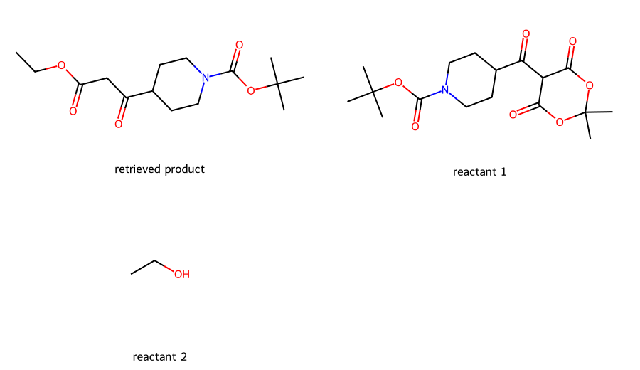
结构文本与原文材料名称
产物：CCOC(=O)CC(=O)C1CCN(C(=O)OC(C)(C)C)CC1
反应物：CC(C)(C)OC(=O)N1CCC(C(=O)C2C(=O)OC(C)(C)OC2=O)CC1；CCO
tert-butyl-4-(2,2-dimethyl-4,6-dioxo-1,3-dioxane-5-carbonyl)piperidine-1-carboxylate；ethanol
#5 · A · 交叉Claisen缩合
记录 1234825 · final_score 16 · 系统标签 connection_method · 分子相似度 1.000
哌啶羧酸乙酯与乙酸乙酯碱促缩合生成目标，原文47%；12份来源合并后仍保留这个直接策略。
来源：EP11835025B1，段落 ['p0322']；本次原文核对：已定位
实际产物与底物结构
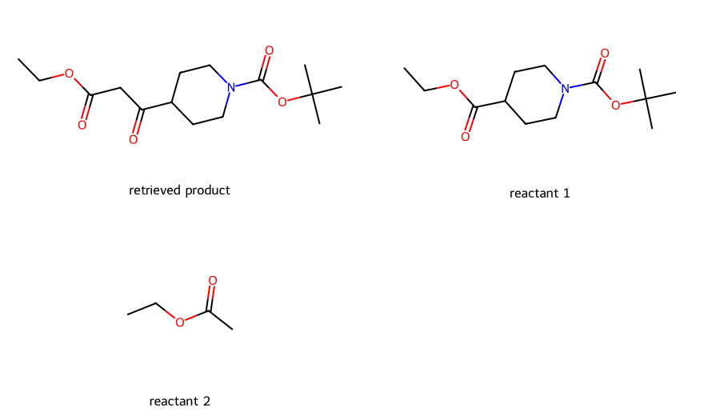
结构文本与原文材料名称
产物：CCOC(=O)CC(=O)C1CCN(C(=O)OC(C)(C)C)CC1
反应物：CCOC(=O)C1CCN(C(=O)OC(C)(C)C)CC1；CCOC(C)=O
Piperidine-1,4-dicarboxylic acid 1-tert-butyl ester 4-ethyl ester；ethyl acetate
T06 Boc脯氨酸甲酯：手性目标
预先指定手性结构；连接相同不能代替立体结果证据
分子量 229.28；重原子 16；环数 1
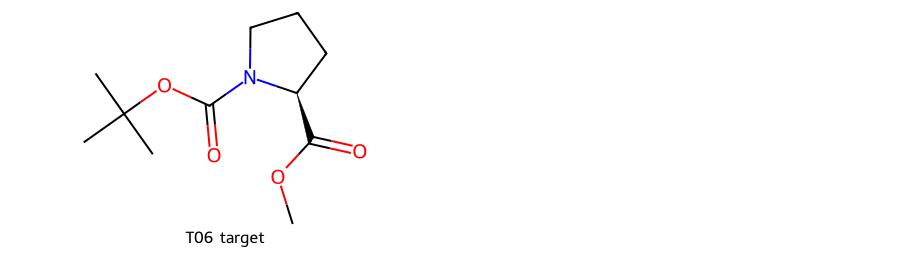
COC(=O)[C@@H]1CCCN1C(=O)OC(C)(C)C
默认预算前五名
#1 · B · 胺Boc保护
记录 7456459 · final_score 15 · 系统标签 connection_method · 分子相似度 1.000
原文脯氨酸甲酯Boc保护，输入图给定手性但输出图丢失手性；方法可用，目标构型须额外核验，不将连接相同认定立体已证实。
来源：US20180127430A1，段落 ['p-0626']；本次原文核对：已定位
实际产物与底物结构

结构文本与原文材料名称
产物：COC(=O)C1CCCN1C(=O)OC(C)(C)C
反应物：CC(C)(C)OC(=O)OC(=O)OC(C)(C)C；COC(=O)[C@@H]1CCCN1
proline methyl ester；Boc-anhydride
#2 · A · 胺Boc保护
记录 1440748 · final_score 17 · 系统标签 connection_method · 分子相似度 1.000
明确(S)脯氨酸甲酯Boc保护得到对应目标，原文95%及表征；比未指定构型的记录更直接。
来源：EP14703747B1，段落 ['p0097']；本次原文核对：已定位
实际产物与底物结构

结构文本与原文材料名称
产物：COC(=O)[C@@H]1CCCN1C(=O)OC(C)(C)C
反应物：CC(C)(C)OC(=O)OC(=O)OC(C)(C)C；COC(=O)[C@@H]1CCCN1
(S)-methyl pyrrolidine-2-carboxylate；Boc-anhydride
#3 · B · 甲酯化后Boc保护
记录 4746479 · final_score 13 · 系统标签 connection_method · 分子相似度 1.000
原文D,L-脯氨酸先甲醇/SOCl2成酯再Boc保护，支持这两步化学方法但得到消旋材料；目标需改用对应手性原料并验证保持。
来源：US20110106241A1，段落 ['p-0224']；本次原文核对：已定位
实际产物与底物结构

结构文本与原文材料名称
产物：COC(=O)C1CCCN1C(=O)OC(C)(C)C
反应物：CC(C)(C)OC(=O)OC(=O)OC(C)(C)C；CCN(CC)CC；O=C(O)C1CCCN1
D,L-proline；di-tert-butyl dicarbonate；triethylamine
#4 · E · 起始物识别错误
记录 1526887 · final_score 13 · 系统标签 connection_method · 分子相似度 1.000
原文仅以A指代底物，抽成Boc苏氨酸样结构，与脯氨酸甲酯目标不一致；不能仅凭相同目标产物认可该映射和输入集合。
来源：EP14703247B1，段落 ['p0083']；本次原文核对：已定位
实际产物与底物结构

结构文本与原文材料名称
产物：COC(=O)[C@@H]1CCCN1C(=O)OC(C)(C)C
反应物：CC(C)(C)OC(=O)OC(=O)OC(C)(C)C；CC(O)C(NC(=O)OC(C)(C)C)C(=O)O；CCN(CC)CC
2-((tert-butoxycarbonyl) amino)-3-hydroxybutanoic acid；Boc-anhydride；Et3N
#5 · B · 羧酸O甲基化
记录 1713818 · final_score 18 · 系统标签 connection_method · 分子相似度 1.000
N-Boc脯氨酸与MeI/Cs2CO3成甲酯，90%且有原文。反应不建立手性，源图未指定构型，目标立体要求不能从此补造；重复MeI也不代表两种试剂。
来源：EP16756553B1，段落 ['p0550']；本次原文核对：已定位
实际产物与底物结构
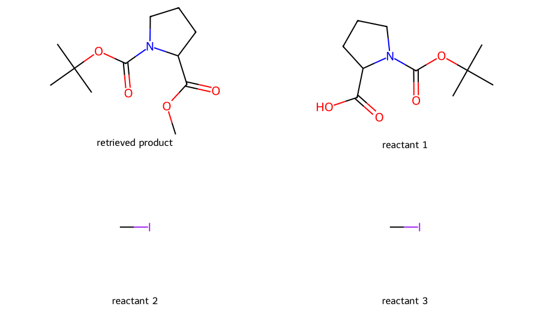
结构文本与原文材料名称
产物：COC(=O)C1CCCN1C(=O)OC(C)(C)C
反应物：CC(C)(C)OC(=O)N1CCCC1C(=O)O；CI；CI
1-(tert-butoxycarbonyl)pyrrolidine-2-carboxylic acid；iodomethane；iodomethane
T07 Boc哌啶酰化Meldrum酸：库内阳性
前次只读核验中reaction_v2的id=3产物；检查环状片段的真实反应作用
分子量 355.39；重原子 25；环数 2

CC(C)(C)OC(=O)N1CCC(C(=O)C2C(=O)OC(C)(C)OC2=O)CC1
默认预算前五名
#1 · A · Meldrum酸C酰化
记录 3 · final_score 19 · 系统标签 connection_method · 分子相似度 1.000
EDCI/DMAP促进哌啶羧酸与Meldrum酸酰化，原文86%，直接目标方法；已有环不是本步新形成。
来源：US20170334917A1，段落 ['p-0765']；本次原文核对：已定位
实际产物与底物结构

结构文本与原文材料名称
产物：CC(C)(C)OC(=O)N1CCC(C(=O)C2C(=O)OC(C)(C)OC2=O)CC1
反应物：CC(C)(C)OC(=O)N1CCC(C(=O)O)CC1；CC1(C)OC(=O)CC(=O)O1
1-(tert-butoxycarbonyl)piperidine-4-carboxylic acid；2,2-dimethyl-1,3-dioxane-4,6-dione
#2 · A · Meldrum酸C酰化
记录 1187797 · final_score 17 · 系统标签 connection_method · 分子相似度 1.000
DCC/DMAP体系得到同一目标，原文为粗品2g及MS，不能解释为高纯度定量收率。
来源：EP14787642B1，段落 ['p0454']；本次原文核对：已定位
实际产物与底物结构

结构文本与原文材料名称
产物：CC(C)(C)OC(=O)N1CCC(C(=O)C2C(=O)OC(C)(C)OC2=O)CC1
反应物：CC(C)(C)OC(=O)N1CCC(C(=O)O)CC1；CC1(C)OC(=O)CC(=O)O1
1-(tert-butoxycarbonyl)piperidine-4-carboxylic acid；2,2-dimethyl-1,3-dioxane-4,6-dione
#3 · D · 不相关噻唑成环
记录 6730054 · final_score 16 · 系统标签 local_method · 分子相似度 0.247
硫代酰胺与α-溴β-酮酯构建噻唑，不生成目标酰化Meldrum酸；Boc哌啶及羰基重合只是片段。
来源：US20160237075A1，段落 ['p-0422']；本次原文核对：已定位
实际产物与底物结构

结构文本与原文材料名称
产物：CCOC(=O)c1sc(C2CCCN(C(=O)OC(C)(C)C)C2)nc1-c1ccc(Oc2ccccc2)cc1
反应物：CC(C)(C)OC(=O)N1CCCCC1C(N)=S；CCOC(=O)C(Br)C(=O)c1ccc(Oc2ccccc2)cc1
tert-butyl 2-carbamothioylpiperidine-1-carboxylate；ethyl 2-bromo-3-oxo-3-(4-phenoxyphenyl)propanoate 4
#4 · B · Meldrum酸C酰化
记录 10288791 · final_score 15 · 系统标签 connection_method · 分子相似度 0.694
在2位带甲基的Boc哌啶4-羧酸上完成同样酰化，去掉该甲基换成目标酸端是明确类比；原文47.6%仅属于来源底物。
来源：US20250353858A1，段落 ['p-0487']；本次原文核对：已定位
实际产物与底物结构
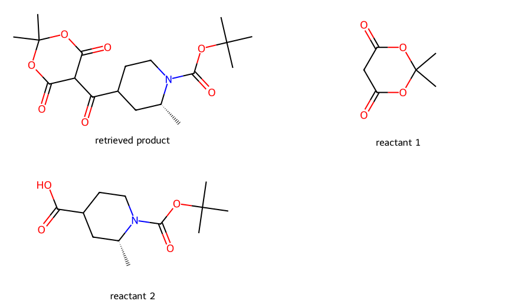
结构文本与原文材料名称
产物：C[C@@H]1CC(C(=O)C2C(=O)OC(C)(C)OC2=O)CCN1C(=O)OC(C)(C)C
反应物：CC1(C)OC(=O)CC(=O)O1；C[C@@H]1CC(C(=O)O)CCN1C(=O)OC(C)(C)C
(2R)-1-(tert-butoxycarbonyl)-2-methylpiperidine-4-carboxylic acid；2,2-dimethyl-1,3-dioxane-4,6-dione
#5 · C · 远端前体氢化线索
记录 1192210 · final_score 15 · 系统标签 local_method · 分子相似度 0.300
来源还原带苯基不饱和哌啶羧酸，羧基位置与取代都不同；不是目标酰化步骤，只能作为较远的母核准备线索。
来源：EP14843405A1，段落 ['p0115']；本次原文核对：已定位
实际产物与底物结构
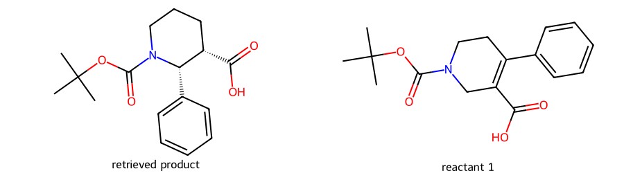
结构文本与原文材料名称
产物：CC(C)(C)OC(=O)N1CCC[C@H](C(=O)O)[C@@H]1c1ccccc1
反应物：CC(C)(C)OC(=O)N1CCC(c2ccccc2)=C(C(=O)O)C1
1-(tert-butoxycarbonyl)-4-phenyl-1,2,5,6-tetrahydropyridine-3-calboxyl ic acid
T08 2-吡咯烷酮：小环内酰胺
预先指定的环状目标，不预猜断环位点，观察返回先例是否提供成环或后修饰
分子量 85.11；重原子 6；环数 1
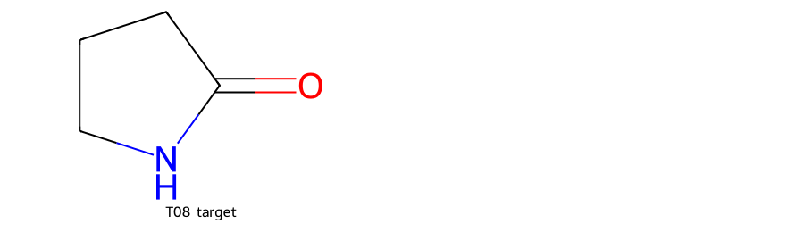
O=C1CCCN1
默认预算前五名
#1 · B · 琥珀酰亚胺还原
记录 6183104 · final_score 12 · 系统标签 modification · 分子相似度 1.000
原文明确提出琥珀酰亚胺催化氢化得到2-吡咯烷酮，方向直接但本段是工艺概述，需继续取实际实施例。
来源：US20150005510A1，段落 ['p-0022']；本次原文核对：已定位
实际产物与底物结构

结构文本与原文材料名称
产物：O=C1CCCN1
反应物：O=C1CCC(=O)N1
succinimide
#2 · C · 多路线混列待补证
记录 4971202 · final_score 13 · 系统标签 connection_method · 分子相似度 1.000
输入同时列出琥珀酰亚胺、内酯和氨，可能混合还原和内酯氨解两条路线；未定位原段落，不能把三者当作一锅配方。
来源：US08017790，段落 ['ul0025-0002']；本次原文核对：未定位，保留未知
实际产物与底物结构

结构文本与原文材料名称
产物：O=C1CCCN1
反应物：N；O=C1CCC(=O)N1；O=C1CCCO1
succinimide；gamma-butyrolactone；ammonia
#3 · B · 琥珀酸体系还原胺化
记录 649845 · final_score 12 · 系统标签 connection_method · 分子相似度 1.000
背景文献明确琥珀酸或酸酐在氨存在下加氢得到目标；二者是替代底物，不同时投料，作为不同于内酯法的参考路线。
来源：EP02756233B1，段落 ['p0008']；本次原文核对：已定位
实际产物与底物结构

结构文本与原文材料名称
产物：O=C1CCCN1
反应物：N；O=C(O)CCC(=O)O；O=C1CCC(=O)O1
succinic acid；succinic anhydride；ammonia
#4 · B · 内酯氨解及环化
记录 1708819 · final_score 16 · 系统标签 connection_method · 分子相似度 1.000
原文明确γ-丁内酯与氨在高温高压下形成目标，具有直接方法价值；条件负担应后排序，不预先排除。
来源：EP14886152B1，段落 ['p0053']；本次原文核对：已定位
实际产物与底物结构

结构文本与原文材料名称
产物：O=C1CCCN1
反应物：N；O=C1CCCO1
gamma-butyrolactone；ammonia
#5 · B · 不饱和内酰胺氢化
记录 2066936 · final_score 15 · 系统标签 modification · 分子相似度 1.000
氢化1,5-二氢吡咯酮的双键得到目标有明确关系；本段为适用范围声明，需要实施例佐证实际条件。
来源：EP24755865A1，段落 ['p0030']；本次原文核对：已定位
实际产物与底物结构
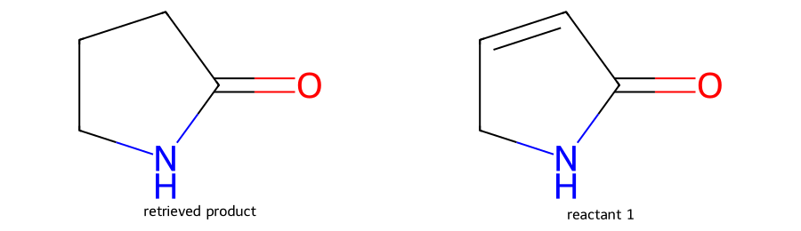
结构文本与原文材料名称
产物：O=C1CCCN1
反应物：O=C1C=CCN1
1,5-dihydropyrrol-2-one
T09 多取代苯甲酰胺：无精确先例目标
独立构造的T04支链替换目标；限定精确GIN探针确认12分以上来源无同一产物
分子量 422.83；重原子 28；环数 2

CC(C)(C)OC(=O)N1CCC(NC(=O)c2cc(F)c(OC(F)F)cc2Cl)CC1
默认预算前五名
#1 · B · 芳卤羰基化酰胺化
记录 7169133 · final_score 19 · 系统标签 structure_clue · 分子相似度 0.677
杂芳溴、CO与相同Boc-4-氨基哌啶构建芳酰胺，并保留Cl/OCHF2。目标需换为对应多取代苯基亲电体，杂芳环换苯环的活性和选择性不能直接保证，但提供了实际所需C(O)-N连接方法。
来源：US20170342059A1，段落 ['p-0174']；本次原文核对：已定位
实际产物与底物结构
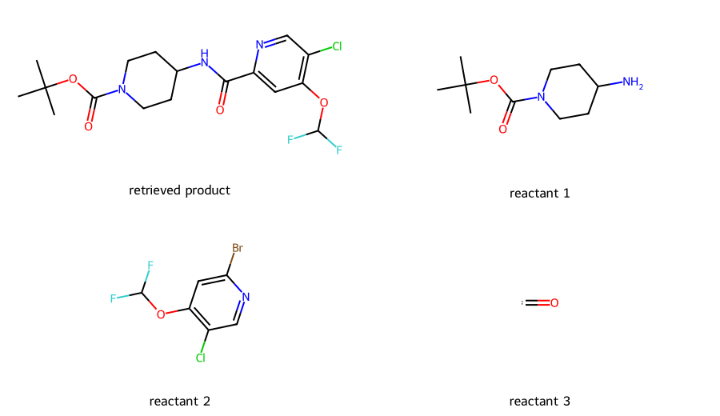
结构文本与原文材料名称
产物：CC(C)(C)OC(=O)N1CCC(NC(=O)c2cc(OC(F)F)c(Cl)cn2)CC1
反应物：CC(C)(C)OC(=O)N1CCC(N)CC1；FC(F)Oc1cc(Br)ncc1Cl；[C]=O
2-Bromo-5-chloro-4-(difluoromethoxy)pyridine；4-amino-1-tert-butoxycarbonylpiperidine；carbon monoxide
#2 · D · 不相关噻唑成环
记录 6730054 · final_score 16 · 系统标签 local_method · 分子相似度 0.226
来源噻唑构建既不是目标酰胺，也不安装目标二氟甲氧基，只共享部分骨架。
来源：US20160237075A1，段落 ['p-0422']；本次原文核对：已定位
实际产物与底物结构

结构文本与原文材料名称
产物：CCOC(=O)c1sc(C2CCCN(C(=O)OC(C)(C)C)C2)nc1-c1ccc(Oc2ccccc2)cc1
反应物：CC(C)(C)OC(=O)N1CCCCC1C(N)=S；CCOC(=O)C(Br)C(=O)c1ccc(Oc2ccccc2)cc1
tert-butyl 2-carbamothioylpiperidine-1-carboxylate；ethyl 2-bromo-3-oxo-3-(4-phenoxyphenyl)propanoate 4
#3 · B · 芳酸与4氨基哌啶酰胺化
记录 1629922 · final_score 17 · 系统标签 structure_clue · 分子相似度 0.642
HATU将带F/OCHF2的芳酸与相同Boc胺偶联，官能团耐受和目标酰胺连接有直接类比；需要换成目标苯甲酸，来源重复酸条目不能当作独立投料。
来源：EP16815960B1，段落 ['p1125']；本次原文核对：已定位
实际产物与底物结构
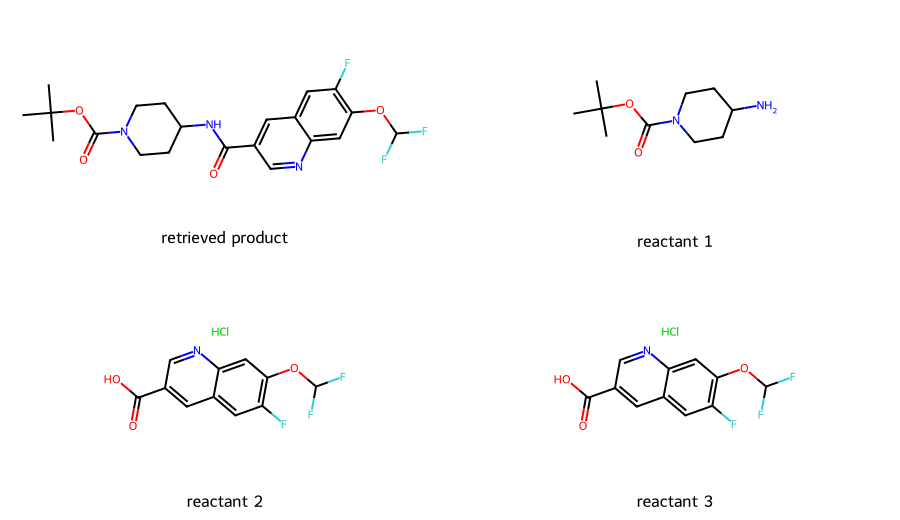
结构文本与原文材料名称
产物：CC(C)(C)OC(=O)N1CCC(NC(=O)c2cnc3cc(OC(F)F)c(F)cc3c2)CC1
反应物：CC(C)(C)OC(=O)N1CCC(N)CC1；Cl.O=C(O)c1cnc2cc(OC(F)F)c(F)cc2c1；Cl.O=C(O)c1cnc2cc(OC(F)F)c(F)cc2c1
7-(difluoromethoxy)-6-fluoroquinoline-3-carboxylic acid hydrochloride；7-(difluoromethoxy)-6-fluoroquinoline-3-carboxylic acid hydrochloride；tert-butyl 4-aminopiperidine-1-carboxylate
#4 · D · 不相关杂芳甲酰化
记录 4773801 · final_score 16 · 系统标签 structure_clue · 分子相似度 0.382
DMF/POCl3向杂芳环引入醛，目标需要芳酰胺而非该杂芳醛，不能因Boc哌啶重合认定适用。
来源：US20110152240A1，段落 ['p-0531']；本次原文核对：已定位
实际产物与底物结构

结构文本与原文材料名称
产物：CC(C)(C)OC(=O)N1CCC(Nc2cc(Cl)nc3c(C=O)cnn23)CC1
反应物：CC(C)(C)OC(=O)N1CCC(Nc2cc(Cl)nc3ccnn23)CC1；CN(C)C=O
tert-butyl 4-(5-chloropyrazolo[1,5-a]pyrimidin-7-ylamino)piperidine-1-carboxylate；DMF
#5 · D · 不相关醇磺酰化
记录 1629373 · final_score 18 · 系统标签 structure_clue · 分子相似度 0.358
把羟甲基变成甲磺酸酯，目标没有该离去基也不靠此步构建酰胺或OCHF2。
来源：EP16815478B1，段落 ['p0124']；本次原文核对：已定位
实际产物与底物结构
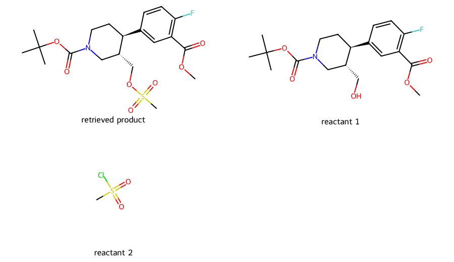
结构文本与原文材料名称
产物：COC(=O)c1cc([C@@H]2CCN(C(=O)OC(C)(C)C)C[C@H]2COS(C)(=O)=O)ccc1F
反应物：COC(=O)c1cc([C@@H]2CCN(C(=O)OC(C)(C)C)C[C@H]2CO)ccc1F；CS(=O)(=O)Cl
(3S,4R)-tert-butyl 4-(4-fluoro-3-(methoxycarbonyl) phenyl)-3-(hydroxymethyl)piperidine-1-carboxylate；methanesulfonylchloride
扩大预算对照前五名
#1 · C · 酚烷基化弱线索
记录 7157921 · final_score 20 · 系统标签 local_method · 分子相似度 0.169
卤代芳酚与溴丁腈形成Ar-O-烷基，目标需要OCHF2；二氟甲基化试剂和机制不能从普通SN2直接替代，未解决目标酰胺。
来源：US20170320888A1，段落 ['p-0635']；本次原文核对：已定位
实际产物与底物结构
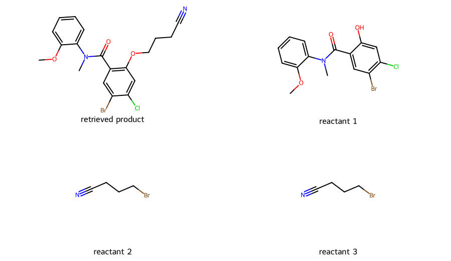
结构文本与原文材料名称
产物：COc1ccccc1N(C)C(=O)c1cc(Br)c(Cl)cc1OCCCC#N
反应物：COc1ccccc1N(C)C(=O)c1cc(Br)c(Cl)cc1O；N#CCCCBr；N#CCCCBr
5-bromo-4-chloro-2-hydroxy-N-(2-methoxy-phenyl)-N-methyl-benzamide；4-bromo-butyronitrile；4-bromobutyronitrile
#2 · D · 不相关噻唑成环
记录 6730054 · final_score 16 · 系统标签 local_method · 分子相似度 0.226
来源噻唑构建既不是目标酰胺，也不安装目标二氟甲氧基，只共享部分骨架。
来源：US20160237075A1，段落 ['p-0422']；本次原文核对：已定位
实际产物与底物结构

结构文本与原文材料名称
产物：CCOC(=O)c1sc(C2CCCN(C(=O)OC(C)(C)C)C2)nc1-c1ccc(Oc2ccccc2)cc1
反应物：CC(C)(C)OC(=O)N1CCCCC1C(N)=S；CCOC(=O)C(Br)C(=O)c1ccc(Oc2ccccc2)cc1
tert-butyl 2-carbamothioylpiperidine-1-carboxylate；ethyl 2-bromo-3-oxo-3-(4-phenoxyphenyl)propanoate 4
#3 · E · 来源底物错误
记录 7167498 · final_score 12 · 系统标签 local_method · 分子相似度 0.195
原文是Cbz二肽氢解除保护，库中却列出无关肽和稠环酰胺，不能信任当前映射反应；目标T09也不需要该脱保护。
来源：US20170340693A1，段落 ['p-0351']；本次原文核对：已定位
实际产物与底物结构
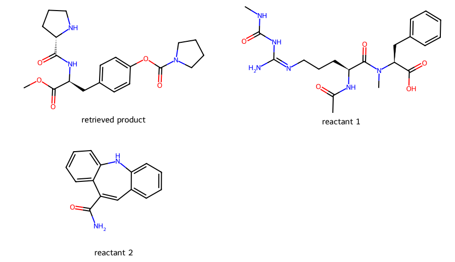
结构文本与原文材料名称
产物：COC(=O)[C@H](Cc1ccc(OC(=O)N2CCCC2)cc1)NC(=O)[C@@H]1CCCN1
反应物：CNC(=O)NC(N)=NCCC[C@H](NC(C)=O)C(=O)N(C)[C@@H](Cc1ccccc1)C(=O)O；NC(=O)C1=Cc2ccccc2Nc2ccccc21
Cbz；dipeptide
#4 · E · 底物与产物错误对应
记录 845423 · final_score 15 · 系统标签 modification · 分子相似度 0.189
原文声称与溴氯嘧啶反应，输出图却只表现Boc变异丙酯且未包含该嘧啶；当前反应式与目标都缺乏可靠联系。
来源：EP11737210A1，段落 ['p0182']；本次原文核对：已定位
实际产物与底物结构
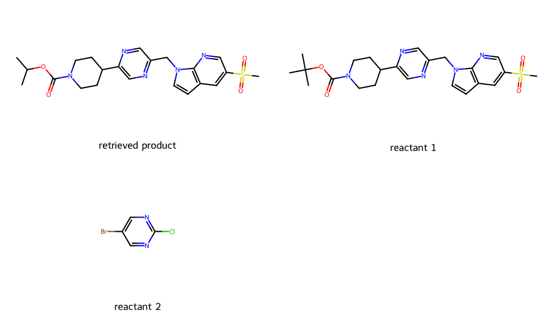
结构文本与原文材料名称
产物：CC(C)OC(=O)N1CCC(c2cnc(Cn3ccc4cc(S(C)(=O)=O)cnc43)cn2)CC1
反应物：CC(C)(C)OC(=O)N1CCC(c2cnc(Cn3ccc4cc(S(C)(=O)=O)cnc43)cn2)CC1；Clc1ncc(Br)cn1
tert-butyl 4-[5-(5-methanesulfonyl-1H-pyrrolo[2,3-b]pyridin-1-ylmethyl)pyrazin-2-yl]piperidine-1-carboxylate；5-bromo-2-chloropyrimidine
#5 · D · 不相关杂芳基偶联
记录 7098963 · final_score 20 · 系统标签 modification · 分子相似度 0.118
硝基芳卤与噻唑酯建立C-C键，目标需要酰胺；共同卤代芳醚不构成对应方法，且原段落未定位。
来源：US20170210735A1，段落 ['ul0005-0002']；本次原文核对：未定位，保留未知
实际产物与底物结构
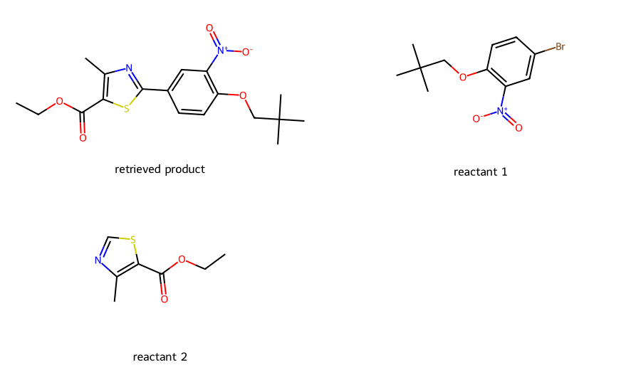
结构文本与原文材料名称
产物：CCOC(=O)c1sc(-c2ccc(OCC(C)(C)C)c([N+](=O)[O-])c2)nc1C
反应物：CC(C)(C)COc1ccc(Br)cc1[N+](=O)[O-]；CCOC(=O)c1scnc1C
4-bromo-1-(2,2-dimethylpropoxy)-2-nitrobenzene；ethyl 4-methyl-1,3-thiazole-5-carboxylate
T10 氟代联芳基羟乙基酰胺：无精确先例目标
独立构造的多连接目标；限定精确GIN探针确认12分以上来源无同一产物
分子量 290.29；重原子 21；环数 2

COc1cc(F)c(-c2cc(C(=O)NCCO)cnc2)cc1
默认预算前五名
#1 · D · 不相关氨基甲酸酯构建
记录 4336940 · final_score 18 · 系统标签 modification · 分子相似度 0.150
活化碳酸酯酰化哌啶氮得到氨基甲酸酯，不是目标吡啶羧酸与乙醇胺的酰胺，也没有构建联芳键。
来源：US20100029687A1，段落 ['p-0327']；本次原文核对：已定位
实际产物与底物结构

结构文本与原文材料名称
产物：COC(=O)c1cccc(OC(=O)N2CCC(CN(C(=O)OC(C)(C)C)[C@H](C)c3cccc4ccccc34)C(c3cccc(F)c3)C2)c1
反应物：COC(=O)c1cccc(OC(=O)Oc2ccc([N+](=O)[O-])cc2)c1；C[C@H](c1cccc2ccccc12)N(CC1CCNCC1c1cccc(F)c1)C(=O)OC(C)(C)C
methyl 3-{[(4-nitrophenoxy)carbonyl]oxy}benzoate；tert-butyl {[3-(3-fluorophenyl)piperidin-4-yl]methyl}[(1R)-1-(1-naphthyl)ethyl]carbamate
#2 · B · Suzuki偶联
记录 1177548 · final_score 15 · 系统标签 structure_clue · 分子相似度 0.218
氟代芳溴与杂芳硼酸酯建立芳基—杂芳基C-C键，并保留酰胺，支持目标联芳键的局部策略；需将吡咯/OCF3换成目标吡啶/OCH3，不能保证相同条件。
来源：EP13756320B1，段落 ['p0360']；本次原文核对：已定位
实际产物与底物结构

结构文本与原文材料名称
产物：Cc1c(-c2ccc(OC(F)(F)F)cc2F)c(C(=O)N2CCOCC2)n(Cc2ccccc2)c1C(F)(F)F
反应物：Cc1c(B2OC(C)(C)C(C)(C)O2)c(C(=O)N2CCOCC2)n(Cc2ccccc2)c1C(F)(F)F；Fc1cc(OC(F)(F)F)ccc1Br
(1-benzyl-4-methyl-3-(4,4,5,5-tetramethyl-1,3,2-dioxaborolan-2-yl)-5-(trifluoromethyl)-1H-pyrrol-2-yl)(morpholino)methanone；1-bromo-2-fluoro-4-(trifluoromethoxy)benzene
#3 · B · 芳酸与伯胺酰胺化
记录 8991986 · final_score 17 · 系统标签 structure_clue · 分子相似度 0.201
原文HATU将芳酸与末端伯胺连接，能支持目标酸端与胺端酰胺化这一局部方法；大分子大小不是否决理由，但目标游离OH的相容性未被此例验证。
来源：US20220143183A1，段落 ['p-0455']；本次原文核对：已定位
实际产物与底物结构
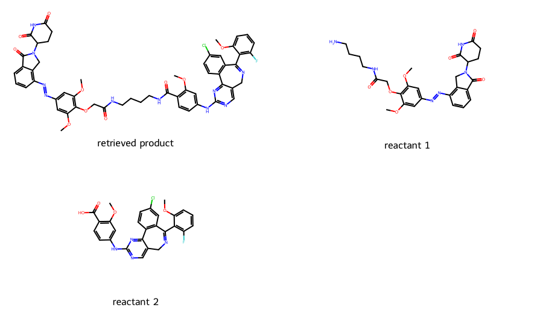
结构文本与原文材料名称
产物：COc1cc(Nc2ncc3c(n2)-c2ccc(Cl)cc2C(c2c(F)cccc2OC)=NC3)ccc1C(=O)NCCCCNC(=O)COc1c(OC)cc(N=Nc2cccc3c2CN(C2CCC(=O)NC2=O)C3=O)cc1OC
反应物：COc1cc(/N=N/c2cccc3c2CN(C2CCC(=O)NC2=O)C3=O)cc(OC)c1OCC(=O)NCCCCN；COc1cc(Nc2ncc3c(n2)-c2ccc(Cl)cc2C(c2c(F)cccc2OC)=NC3)ccc1C(=O)O
(E)-N-(4-aminobutyl)-2-(4-((2-(2,6-dioxopiperidin-3-yl)-1-oxoisoindolin-4-yl)diazenyl)-2,6-dimethoxyphenoxy)acetamide；Alisertib
#4 · C · 酰胺方向不同的弱线索
记录 4353607 · final_score 20 · 系统标签 structure_clue · 分子相似度 0.150
来源是芳胺与氯乙酰氯，目标是芳酸与羟乙基胺；亲核/亲电两端不相同，保留泛化酰化线索而非直接迁移依据。
来源：US20100056490A1，段落 ['p-0171']；本次原文核对：已定位
实际产物与底物结构
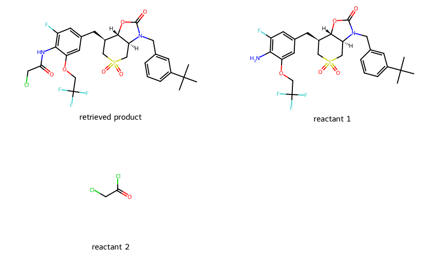
结构文本与原文材料名称
产物：CC(C)(C)c1cccc(CN2C(=O)O[C@H]3[C@H](Cc4cc(F)c(NC(=O)CCl)c(OCC(F)(F)F)c4)CS(=O)(=O)C[C@@H]32)c1
反应物：CC(C)(C)c1cccc(CN2C(=O)O[C@H]3[C@H](Cc4cc(F)c(N)c(OCC(F)(F)F)c4)CS(=O)(=O)C[C@@H]32)c1；O=C(Cl)CCl
(3aR,7S,7aS)-7-[4-amino-3-fluoro-5-(2,2,2-trifluoro-ethoxy)-benzyl]-3-(3-tert-butyl-benzyl)-5,5-dioxo-hexahydro-1-oxa-5lambda*6*-thia-3-aza-inden-2-one；chloroacetylchloride
#5 · B · 烟酸与乙醇胺酰胺化
记录 4413166 · final_score 21 · 系统标签 structure_clue · 分子相似度 0.487
原文取代烟酸与乙醇胺通过TBTU/HOBt偶联，确实得到NHCH2CH2OH尾部；目标只需换酸端取代，具备清楚局部关联，但不解决另一段联芳键。
来源：US20100137313A1，段落 ['p-1557']；本次原文核对：已定位
实际产物与底物结构
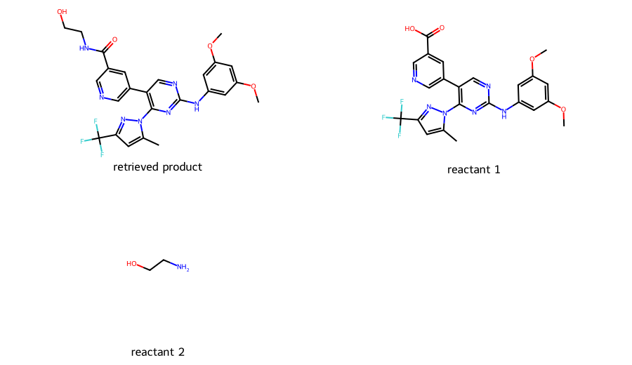
结构文本与原文材料名称
产物：COc1cc(Nc2ncc(-c3cncc(C(=O)NCCO)c3)c(-n3nc(C(F)(F)F)cc3C)n2)cc(OC)c1
反应物：COc1cc(Nc2ncc(-c3cncc(C(=O)O)c3)c(-n3nc(C(F)(F)F)cc3C)n2)cc(OC)c1；NCCO
5-{2-[(3,5-dimethoxyphenyl)amino]-4-[5-methyl-3-(trifluoromethyl)-1H-pyrazol-1-yl]pyrimidin-5-yl}pyridine-3-carboxylic acid；ethanolamine
扩大预算对照前五名
#1 · D · 不相关氨基甲酸酯构建
记录 4336940 · final_score 18 · 系统标签 modification · 分子相似度 0.150
活化碳酸酯酰化哌啶氮得到氨基甲酸酯，不是目标吡啶羧酸与乙醇胺的酰胺，也没有构建联芳键。
来源：US20100029687A1，段落 ['p-0327']；本次原文核对：已定位
实际产物与底物结构
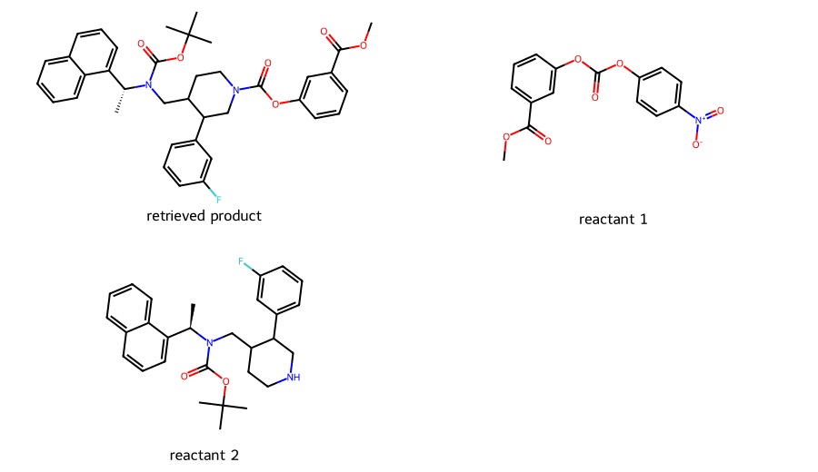
结构文本与原文材料名称
产物：COC(=O)c1cccc(OC(=O)N2CCC(CN(C(=O)OC(C)(C)C)[C@H](C)c3cccc4ccccc34)C(c3cccc(F)c3)C2)c1
反应物：COC(=O)c1cccc(OC(=O)Oc2ccc([N+](=O)[O-])cc2)c1；C[C@H](c1cccc2ccccc12)N(CC1CCNCC1c1cccc(F)c1)C(=O)OC(C)(C)C
methyl 3-{[(4-nitrophenoxy)carbonyl]oxy}benzoate；tert-butyl {[3-(3-fluorophenyl)piperidin-4-yl]methyl}[(1R)-1-(1-naphthyl)ethyl]carbamate
#2 · B · 烟酸与胺酰胺化
记录 3874361 · final_score 19 · 系统标签 local_method · 分子相似度 0.338
取代烟酸与N-甲基哌嗪HBTU偶联支持烟酸羧基活化和胺酰化，产率虽低仍有方法参考；目标换成乙醇胺时需验证OH相容性。
来源：US20080255085A1，段落 ['p-0652']；本次原文核对：已定位
实际产物与底物结构
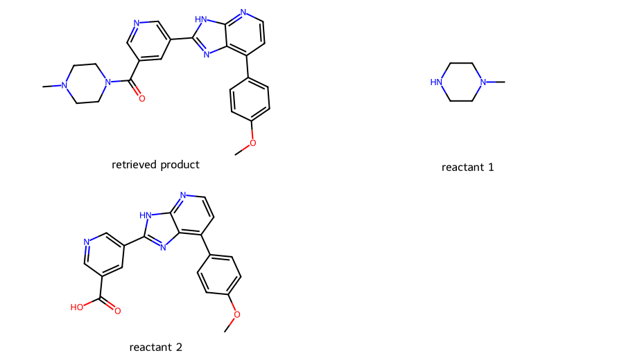
结构文本与原文材料名称
产物：COc1ccc(-c2ccnc3[nH]c(-c4cncc(C(=O)N5CCN(C)CC5)c4)nc23)cc1
反应物：CN1CCNCC1；COc1ccc(-c2ccnc3[nH]c(-c4cncc(C(=O)O)c4)nc23)cc1
5-[7-(4-methoxyphenyl)-3H-imidazo[4,5-b]pyridin-2-yl]nicotinic acid；1-methylpiperazine
#3 · B · Suzuki偶联
记录 1177548 · final_score 15 · 系统标签 structure_clue · 分子相似度 0.218
氟代芳溴与杂芳硼酸酯建立芳基—杂芳基C-C键，并保留酰胺，支持目标联芳键的局部策略；需将吡咯/OCF3换成目标吡啶/OCH3，不能保证相同条件。
来源：EP13756320B1，段落 ['p0360']；本次原文核对：已定位
实际产物与底物结构
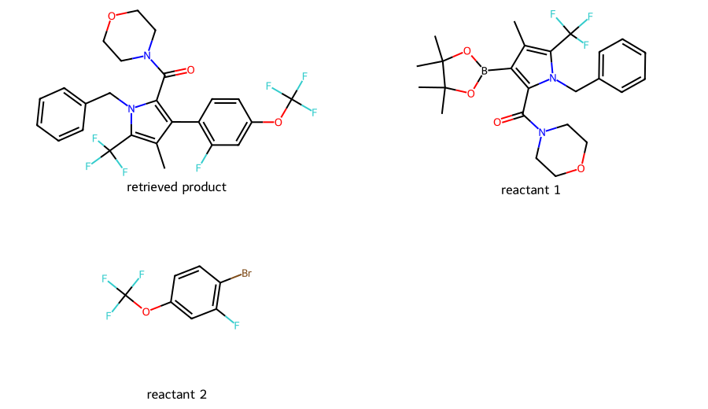
结构文本与原文材料名称
产物：Cc1c(-c2ccc(OC(F)(F)F)cc2F)c(C(=O)N2CCOCC2)n(Cc2ccccc2)c1C(F)(F)F
反应物：Cc1c(B2OC(C)(C)C(C)(C)O2)c(C(=O)N2CCOCC2)n(Cc2ccccc2)c1C(F)(F)F；Fc1cc(OC(F)(F)F)ccc1Br
(1-benzyl-4-methyl-3-(4,4,5,5-tetramethyl-1,3,2-dioxaborolan-2-yl)-5-(trifluoromethyl)-1H-pyrrol-2-yl)(morpholino)methanone；1-bromo-2-fluoro-4-(trifluoromethoxy)benzene
#4 · C · 不同胺端的酰化线索
记录 9936929 · final_score 19 · 系统标签 local_method · 分子相似度 0.253
杂芳酸与N-甲基芳胺成酰胺，目标是含游离OH的脂肪伯胺；活化思路可参考，但缺少与目标关键底物环境一致的直接依据。
来源：US20240425500A1，段落 ['p-0524']；本次原文核对：已定位
实际产物与底物结构
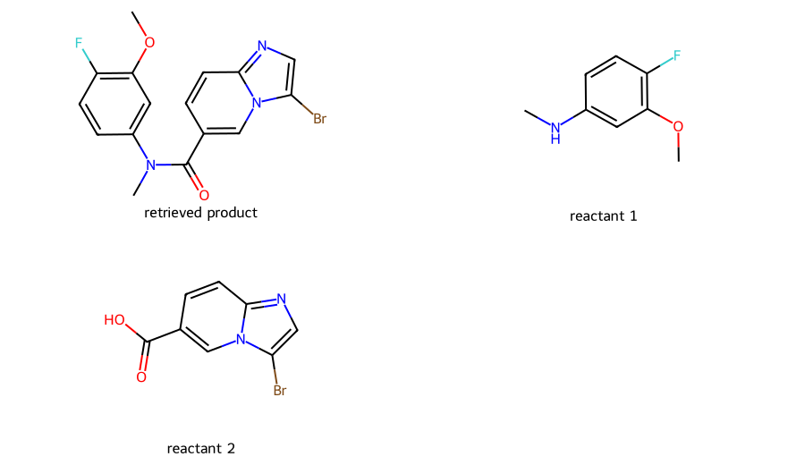
结构文本与原文材料名称
产物：COc1cc(N(C)C(=O)c2ccc3ncc(Br)n3c2)ccc1F
反应物：CNc1ccc(F)c(OC)c1；O=C(O)c1ccc2ncc(Br)n2c1
3-bromoimidazo[1,2-a]pyridine-6-carboxylic acid；4-fluoro-3-methoxy-N-methyl-aniline
#5 · B · 芳酸与伯胺酰胺化
记录 8991986 · final_score 17 · 系统标签 structure_clue · 分子相似度 0.201
原文HATU将芳酸与末端伯胺连接，能支持目标酸端与胺端酰胺化这一局部方法；大分子大小不是否决理由，但目标游离OH的相容性未被此例验证。
来源：US20220143183A1，段落 ['p-0455']；本次原文核对：已定位
实际产物与底物结构

结构文本与原文材料名称
产物：COc1cc(Nc2ncc3c(n2)-c2ccc(Cl)cc2C(c2c(F)cccc2OC)=NC3)ccc1C(=O)NCCCCNC(=O)COc1c(OC)cc(N=Nc2cccc3c2CN(C2CCC(=O)NC2=O)C3=O)cc1OC
反应物：COc1cc(/N=N/c2cccc3c2CN(C2CCC(=O)NC2=O)C3=O)cc(OC)c1OCC(=O)NCCCCN；COc1cc(Nc2ncc3c(n2)-c2ccc(Cl)cc2C(c2c(F)cccc2OC)=NC3)ccc1C(=O)O
(E)-N-(4-aminobutyl)-2-(4-((2-(2,6-dioxopiperidin-3-yl)-1-oxoisoindolin-4-yl)diazenyl)-2,6-dimethoxyphenoxy)acetamide；Alisertib
T11 氟代支化氨基酯：无精确先例目标
独立构造的无环目标；限定精确GIN探针确认12分以上来源无同一产物
分子量 163.19；重原子 11；环数 0
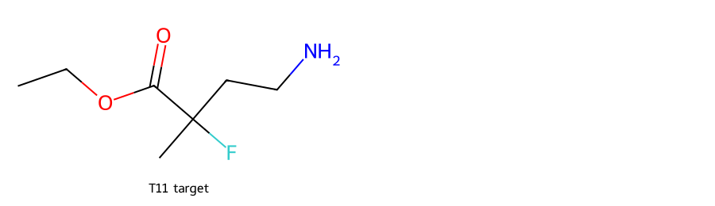
CCOC(=O)C(C)(F)CCN
默认预算前五名
#1 · C · 含氟酯Reformatsky线索
记录 2006041 · final_score 18 · 系统标签 structure_clue · 分子相似度 0.290
二氟乙酸酯锌试剂加到醛生成CF2-β羟基酯，目标为单F/甲基取代且没有βOH；只能提供含氟酯碳链构建线索，尚缺关键迁移与去氧证据。
来源：EP20709748B1，段落 ['p0294']；本次原文核对：已定位
实际产物与底物结构
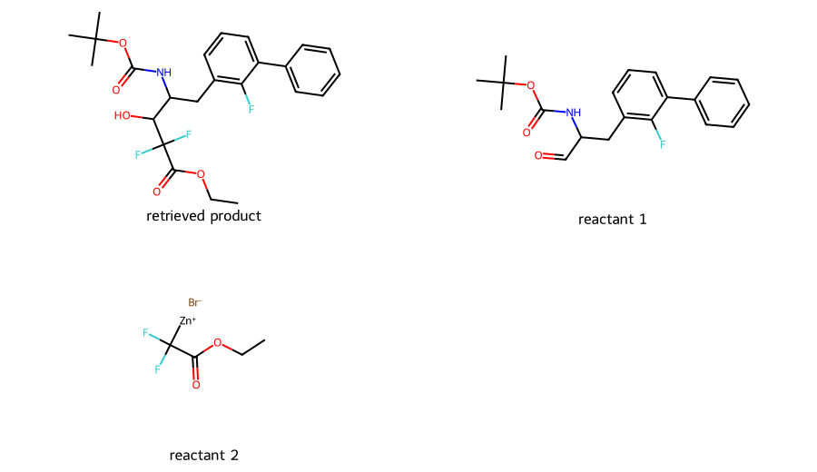
结构文本与原文材料名称
产物：CCOC(=O)C(F)(F)C(O)C(Cc1cccc(-c2ccccc2)c1F)NC(=O)OC(C)(C)C
反应物：CC(C)(C)OC(=O)NC(C=O)Cc1cccc(-c2ccccc2)c1F；CCOC(=O)[C](F)(F)[Zn+].[Br-]
tert-butyl (1-(2-fluoro-[1,1'-biphenyl]-3-yl)-3-oxopropan-2-yl)carbamate；(2-ethoxy-1,1-difluoro-2-oxoethyl) zinc (II) bromide
#2 · C · 普通转酯线索
记录 2528494 · final_score 13 · 系统标签 local_method · 分子相似度 0.222
简单丙酸酯转酯可说明酯端变化，但未覆盖目标α-F/甲基及末端胺的相容性与构建，不计为明确目标方法。
来源：US20060014977A1，段落 ['p-0038']；本次原文核对：已定位
实际产物与底物结构

结构文本与原文材料名称
产物：CCCCOC(=O)CC
反应物：CCC(=O)OC；CCCCO
methyl propionate；butanol
#3 · D · 不相关酯链变化
记录 2922370 · final_score 13 · 系统标签 modification · 分子相似度 0.294
来源为直链戊酸乙酯，输入包含THF和有机锂，未见目标氟与伯胺构建关系且原文缺失，不作目标正例。
来源：US04003919，段落 ['p-0220']；本次原文核对：未定位，保留未知
实际产物与底物结构

结构文本与原文材料名称
产物：CCCCC(=O)OCC
反应物：C1CCOC1；CC(C)NC1CCCCC1；CCOC(C)=O；[Li][CH2]CCC
isopropylcyclohexylamine；tetrahydrofuran；Butyl lithium；Ethyl acetate
#4 · D · 不相关环烯烃氧化断裂
记录 2904446 · final_score 14 · 系统标签 local_method · 分子相似度 0.289
乙氧基环二烯臭氧裂解得到不饱和羟基酯，目标α-氟支化氨基酯连接不同，不能从共同乙酯推出可迁移。
来源：US03962354，段落 ['p-0070']；本次原文核对：未定位，保留未知
实际产物与底物结构

结构文本与原文材料名称
产物：CCOC(=O)C/C=C\CCO
反应物：CCOC1=CCC=CC1；O=[O+][O-]
1-ethoxy-1,4-cyclohexadiene；ozone
#5 · C · 内酯醇解弱线索
记录 1521681 · final_score 12 · 系统标签 local_method · 分子相似度 0.286
γ-丁内酯乙醇解得到羟基酯，目标还需不同α取代及OH到NH2等步骤；本例不直接提供这些必要转化。
来源：EP12719088B1，段落 ['p0638']；本次原文核对：已定位
实际产物与底物结构

结构文本与原文材料名称
产物：CCOC(=O)CCCO
反应物：CCO；O=C1CCCO1
gamma-butyrolactone；EtOH
扩大预算对照前五名
#1 · C · 含氟酯Reformatsky线索
记录 2006041 · final_score 18 · 系统标签 structure_clue · 分子相似度 0.290
二氟乙酸酯锌试剂加到醛生成CF2-β羟基酯，目标为单F/甲基取代且没有βOH；只能提供含氟酯碳链构建线索，尚缺关键迁移与去氧证据。
来源：EP20709748B1，段落 ['p0294']；本次原文核对：已定位
实际产物与底物结构

结构文本与原文材料名称
产物：CCOC(=O)C(F)(F)C(O)C(Cc1cccc(-c2ccccc2)c1F)NC(=O)OC(C)(C)C
反应物：CC(C)(C)OC(=O)NC(C=O)Cc1cccc(-c2ccccc2)c1F；CCOC(=O)[C](F)(F)[Zn+].[Br-]
tert-butyl (1-(2-fluoro-[1,1'-biphenyl]-3-yl)-3-oxopropan-2-yl)carbamate；(2-ethoxy-1,1-difluoro-2-oxoethyl) zinc (II) bromide
#2 · C · 普通酯化线索
记录 172065 · final_score 16 · 系统标签 local_method · 分子相似度 0.222
丙酸与丁醇连续酯化是实际方法，但不能证明含氟支化氨基酸的酯化相容性或目标碳链形成。
来源：EP92111161A2，段落 ['p0064']；本次原文核对：已定位
实际产物与底物结构
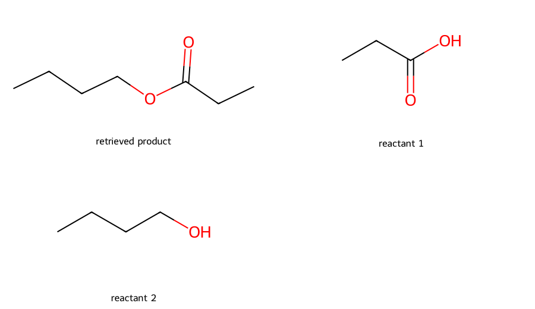
结构文本与原文材料名称
产物：CCCCOC(=O)CC
反应物：CCC(=O)O；CCCCO
propionic acid；n-butanol
#3 · C · 普通转酯线索
记录 2528494 · final_score 13 · 系统标签 local_method · 分子相似度 0.222
简单丙酸酯转酯可说明酯端变化，但未覆盖目标α-F/甲基及末端胺的相容性与构建，不计为明确目标方法。
来源：US20060014977A1，段落 ['p-0038']；本次原文核对：已定位
实际产物与底物结构
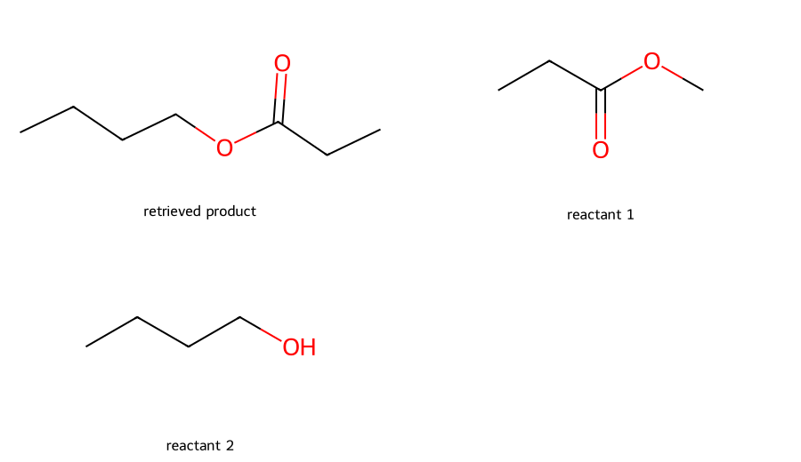
结构文本与原文材料名称
产物：CCCCOC(=O)CC
反应物：CCC(=O)OC；CCCCO
methyl propionate；butanol
#4 · D · 连接方向不同
记录 10115804 · final_score 12 · 系统标签 local_method · 分子相似度 0.216
3-苄氧丙醇与丙酰氯酯化后氢解除苄，得到羟丙基丙酸酯；目标氨基链位于酸端，不能把相同原子数的酯两端对调。
来源：US20250074887A1，段落 ['p-0422']；本次原文核对：已定位
实际产物与底物结构
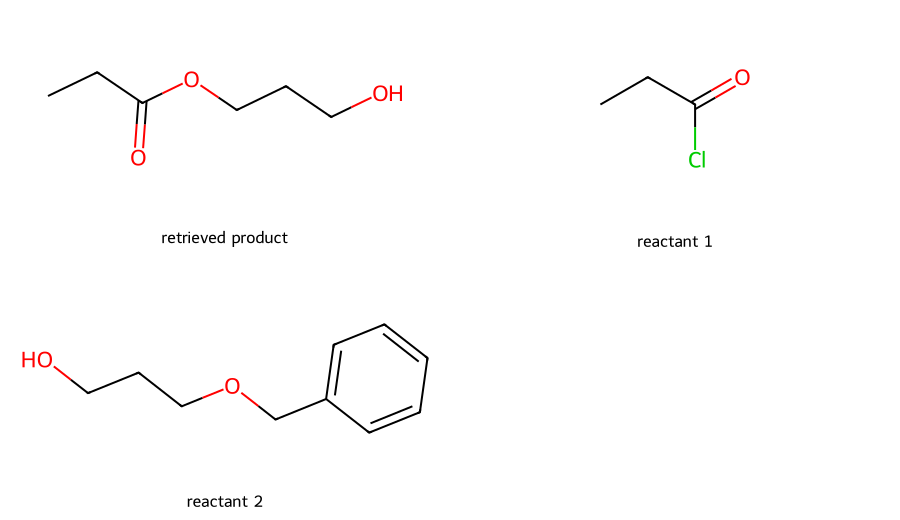
结构文本与原文材料名称
产物：CCC(=O)OCCCO
反应物：CCC(=O)Cl；OCCCOCc1ccccc1
3-benzyloxy-1-propanol；propionyl chloride
#5 · C · 氨基酸酯化保护线索
记录 2225042 · final_score 14 · 系统标签 local_method · 分子相似度 0.209
丙氨酸在甲酸丁酯/丁醇中N-甲酰化并成丁酯，目标是α-F支化γ-氨基乙酯且要游离胺；需要额外保护/脱保护和相容性验证，只留线索。
来源：US20030100790A1，段落 ['P-0069']；本次原文核对：已定位
实际产物与底物结构
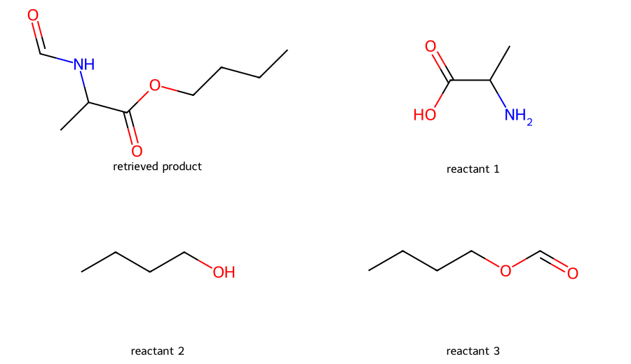
结构文本与原文材料名称
产物：CCCCOC(=O)C(C)NC=O
反应物：CC(N)C(=O)O；CCCCO；CCCCOC=O
D,L-alanine；butyl formate；butanol